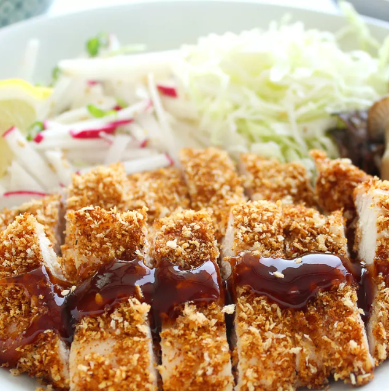
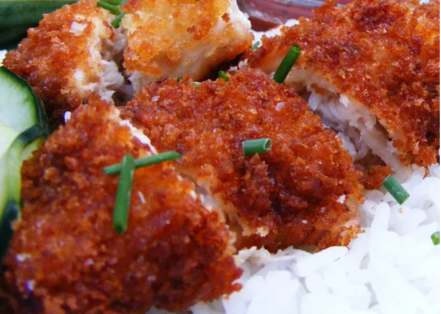

Chicken Katsu

What Is Katsu?
Katsu is a Japanese dish of crispy fried cutlets coated with Panko bread crumbs.
Popular varieties are chicken katsu (like this recipe) and tonkatsu (which is made with pork).
Chicken Katsu Ingredients
- Chicken
You'll need four skinless, boneless chicken breast halves.
- Seasonings
This chicken katsu recipe is simply seasoned with salt and pepper.
- Flour
All-purpose flour helps seal in the moisture, adds flavor, and promotes browning.
- Egg
An egg adds moisture and gives the Panko something to stick to.
- Panko
Panko bread crumbs are responsible for katsu's signature crunch.
- Oil
Opt for a neutral oil with a high smoke point, such as canola or vegetable oil.
How to Make Chicken Katsu At Home
Here's a brief overview of what you can expect when you make homemade chicken katsu:
- Season the chicken, then dredge in flour.
- Coat each breast in egg, then press into the Panko.
- Fry the chicken katsu until golden brown.
